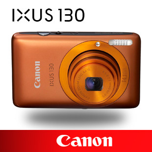

|  |
TCL PMP169B宽屏影院*X刀郎铝镁合金外壳,刀状设计,时尚前卫 *16:9人体最佳视觉感受,如同亲临影院 *电视定时录制 |
| 主要参数 | |
|
型 号:PMP169B 内存容量:512M 屏幕尺寸:2.12英寸(最佳视觉比列16:的宽屏) 屏幕特性:LTPS TFT (720x240) 视频功能:支持&SF格式的MPG4,或通过软件转换成ASF播放,播放效果:320×420,30fps/视频输出,输入/电视节目定时录制。 |
|
| 功能参数 | |
|
音频功能: 支持音频格式:MP3,WMA,W&V/内置麦克风,支持LINEIN寻录/收音功能/内 p 置喇队. 录音格式: 44.1KHz，128 Kbps?? MP3?支持MIC/LINE-IN直录 附加功能: 支持图片格式:JPEG (EXIF2.1)/电子书浏览/多语言(中/英)设置. |
|
| 其他参数 | |
|
接 口: USB接口,AV OUT接口，AvIN接口 扩展卡: 可扩充2GSD,MMC卡 电 池: 内置锂电池 尺 寸: 105.2 x47.6x15.6mm重量: 90g |
|